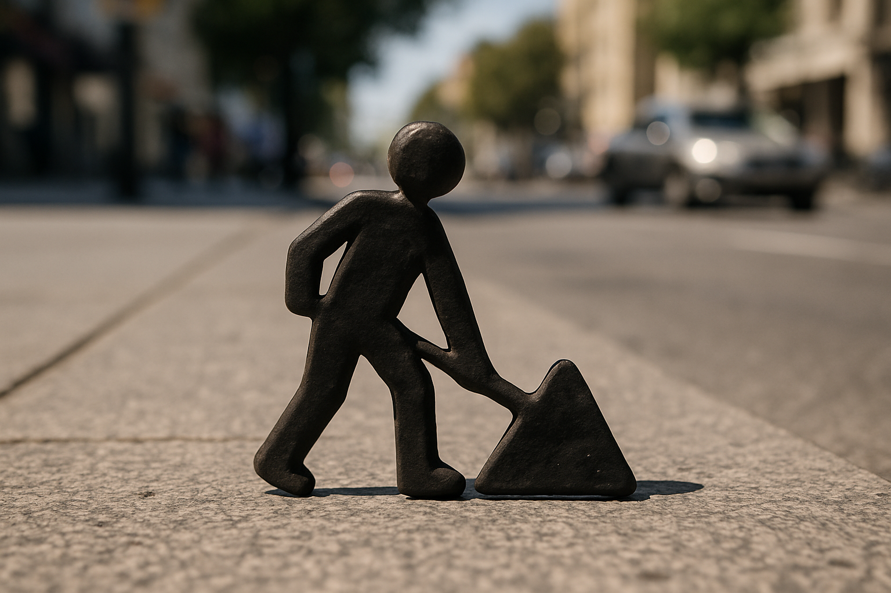
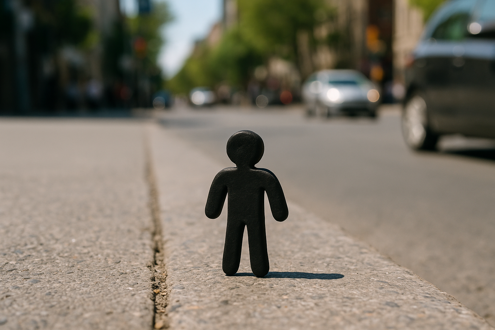

Уличный человечек
2025 год (проект в процессе подготовки)
Полная экспликация
Проект «Уличный человечек» — это художественное высказывание о незамеченном, повседневном труде. Его основа — трансформация графического силуэта с дорожных знаков в трёхмерные фигуры, каждая из которых рассказывает короткую историю. Эти персонажи изображают сцены труда и отдыха: кто-то несёт портфель, кто-то сидит с ребёнком, кто-то читает.
Миниатюрность фигурок (4 см высотой) делает их едва заметными, что служит метафорой невидимого: того, что мы игнорируем в городской среде — труд уборщиков, строителей, курьеров. Проект подчёркивает ценность невидимых людей и их вклад в общество, соединяя уличное искусство, ручной труд и экологически ориентированную практику.
Процесс
Фигурки изготавливаются вручную из самозатвердевающей полимерной глины, содержащей до 70% натуральных компонентов. Материал застывает при комнатной температуре за 24–48 часов, после чего покрывается чёрной краской на водной основе с натуральными пигментами. Каждая фигурка создаётся с пропорциями человеческого тела (1:8) и крепится на городские поверхности с помощью биоразлагаемого клея из крахмала и воды, который держится 1–3 месяца без вреда для среды.
На партию из 100 фигурок уходит около 2 кг глины, 5 мл клея и 10–12 часов ручной работы. Сцены и позы подбираются вручную, чтобы они были узнаваемыми и универсальными, не требуя текстовых пояснений.
Экологический аспект
Материалы выбраны с учётом устойчивости: глина частично биоразлагаема в течение 6–12 месяцев, клей разрушается под действием влаги и микроорганизмов за 3–6 месяцев, а краска не содержит синтетических растворителей, снижая загрязнение на 70%. Проект создаёт визуальное высказывание без ущерба окружающей среде, поддерживая идею «мягкого следа» в искусстве.
Медиа
Изображения:

- 
- 